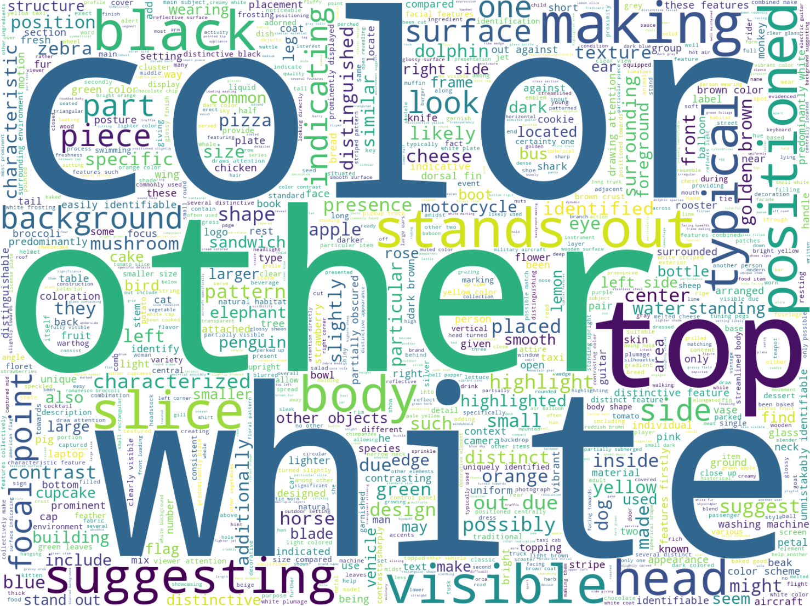

Qualitative comparison of human and model referring expressions under Default and Brief prompts. Human expressions (especially in spoken form) tend to be concise and spatially grounded. In contrast, model outputs under Default prompts are often overly verbose, while Brief prompts reduce length but may omit pragmatically significant cues.

Second image description.
Referring expressions by Humans
Referring expressions by GPT-4o

Referring expressions by InternLM-XComposer
Word cloud comparison between human and model-generated expressions.

Third image description.